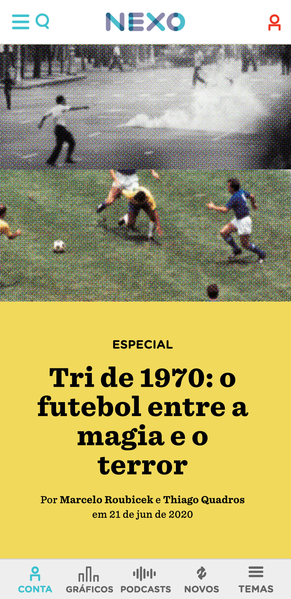
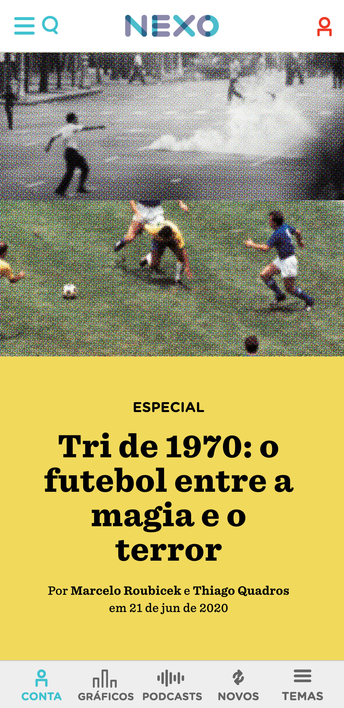
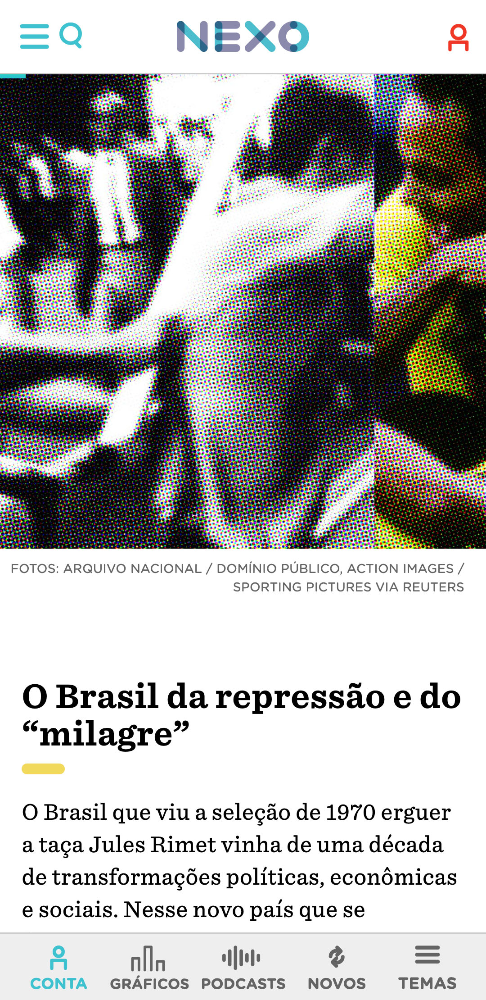
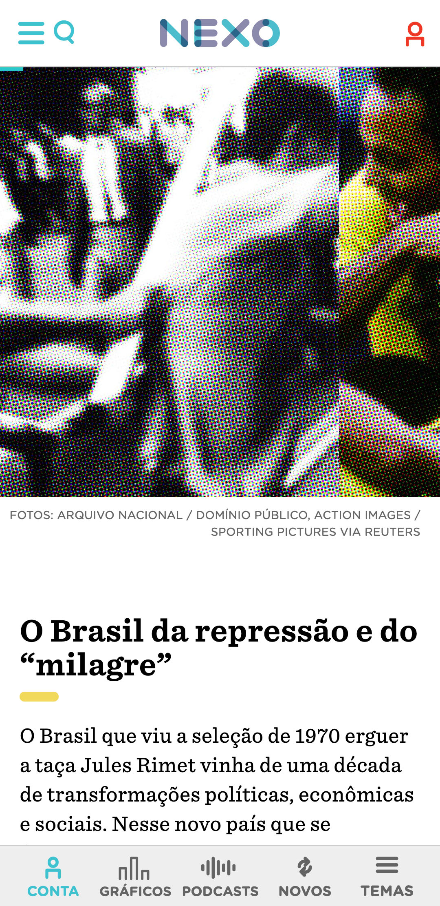

1970 world cup: between the magic and the horror
nexo jornal — 2020
The special article "Tri 1970: football between magic and terror" narrates the role of the Brazilian team and its victory in the 1970 World Cup in the cultural strengthening of the military regime in Brazil.
illustrations
To illustrate the article, I produced several collages with photos of critical moments of the military dictatorship, side by side with iconic images of the Brazilian soccer team. The movements and shapes overlap and mix, and the halftone effect gives uniformity to the image — and also refers to the photographic magazines of the time, such as the Realidade magazine.


layout
This content was used to develop a model layout for Nexo's special articles, with the standardization of graphic elements such as opening, titles, intertitles, quotes and image positioning. This format gives speed and flexibility in building this type of content.
 

 



This project was developed using Adobe Xd, Adobe Photoshop and Visual Studio Code, under the direction of Guilherme Falcão